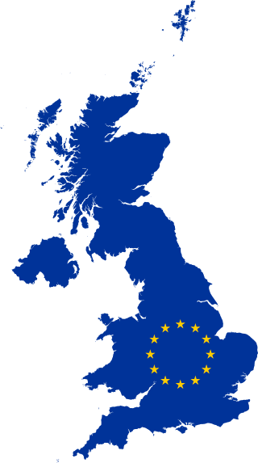
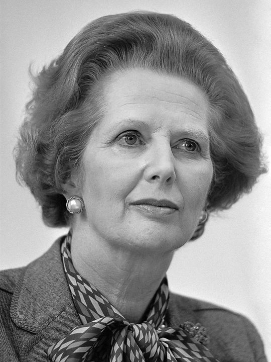
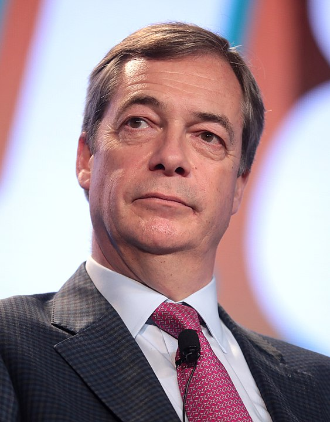
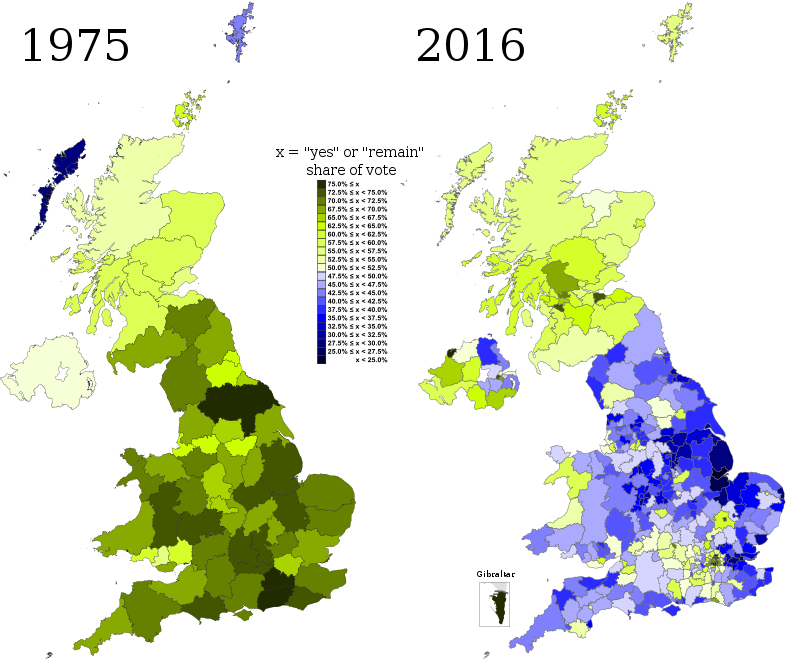

Brexit

EN
EN
Brexit
EN
EN
Timeline

Following a UK-wide referendum on 23 June 2016, in which 51.89 per cent voted in favour of leaving the EU and 48.11 per cent voted to remain a member, Prime Minister David Cameron resigned. On 29 March 2017, the new British government led by Theresa May formally notified the EU of the country's intention to withdraw, beginning the process of Brexit negotiations. The June 2017 general election, which resulted in a hung parliament in which the Conservatives lost their majority but remained the largest party. This deadlock led to three extensions of the UK's Article 50 process.
After the December 2019 election, the British parliament finally ratified the withdrawal agreement with the European Union (Withdrawal Agreement) Act 2020. The UK left the EU at the end of 31 January 2020 . This began a transition period that ended on 31 December 2020 , during which the UK and EU negotiated their future relationship. During the transition, the UK remained subject to EU law and remained part of the European Union Customs Union and the European Single Market. However, it was no longer part of the EU's political bodies or institutions
Rising scepticism
The "Inner Six" European countries signed the Treaty of Paris in 1951, establishing the European Coal and Steel Community (ECSC). The 1955 Messina Conference deemed that the ECSC was a success, and resolved to extend the concept further, thereby leading to the 1957 Treaties of Rome establishing the European Economic Community (EEC) and the European Atomic Energy Community (Euratom). In 1967, these became known as the European Communities (EC). The UK attempted to join in 1963 and 1967, but these applications were vetoed by the President of France, Charles de Gaulle.
Thatcher, who had previously supported the common market and the Single European Act, in the Bruges speech of 1988 warned against "a European super-state exercising a new dominance from Brussels". She influenced Daniel Hannan, who in 1990 founded the Oxford Campaign for Independent Britain; "With hindsight, some see this as the start of the campaign for Brexit", the Financial Times later wrote. In 1994, Sir James Goldsmith formed the Referendum Party to contest the 1997 general election on a platform of providing a referendum on the nature of the UK's relationship with the rest of the EU. The party fielded candidates in 547 constituencies at that election, and won 810,860 votes—2.6% of the total votes cast—but failed to win a parliamentary seat because the vote was spread across the country. The Referendum Party disbanded after Goldsmith's death in 1997.
The 2016 Referendum
 In 2012, Prime Minister David Cameron initially rejected calls for a referendum on the UK's EU membership, but then suggested the possibility of a future referendum to endorse his proposed renegotiation of Britain's relationship with the rest of the EU. According to the BBC, "The prime minister acknowledged the need to ensure the UK's renegotiated position within the EU had 'the full-hearted support of the British people' but they needed to show 'tactical and strategic patience'." On 23 January 2013, under pressure from many of his MPs and from the rise of UKIP, Cameron promised in his Bloomberg speech that a Conservative government would hold an in-or-out referendum on EU membership before the end of 2017, on a renegotiated package, if elected in the 7 May 2015 general election. This was included in the Conservative Party manifesto for the election. n the referendum 51.89% voted in favour of leaving the EU (Leave), and 48.11% voted in favour of remaining a member of the EU (Remain). After this result, Cameron resigned on 13 July 2016, with Theresa May becoming Prime Minister after a leadership contest. A petition calling for a second referendum attracted more than four million signatures, but was rejected by the government on 9 July.
Developer
Miroslav Mihaylov
Email: miro7543@gmail.com
Phone: +359-98-823-1814
Address: Veliko Tarnovo, Bulgaria
Developer
Petar Nedyalkov
Email: miro7543@gmail.com
Phone: +359-98-823-1814
Address: Veliko Tarnovo, Bulgaria
Help
Support
About us
Contact us
©All rights reserved 2021